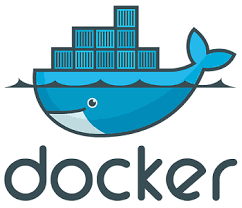
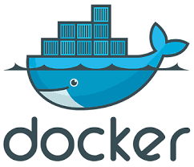

Команды для навигации и базовой работы с файлами
- ls — покажет содержимое директории, в которой вы находитесь. Если после команды ввести адрес конкретной папки, то она покажет то, что хранится в ней. При добавлении аргумента -r в выводе команды появятся файлы из поддиректорий.
- cd — change directory, что в переводе означает «сменить директорию». Из названия понятно, что с помощью этой команды можно перемещаться между папками. Вписываем ее, а потом адрес: cd/user/test/dir/111. Есть сокращенные варианты: cd- для перемещения в предыдущую директорию или cd (без аргументов) для прыжка в домашнюю папку.
- pwd — укажет полный путь до директории, в которой вы находитесь. Если вы перепрыгнули на рабочий стол с помощью cd, то pwd покажет что-то в духе /home/Polzovatel/Desktop.
- ls — расскажет, что перед вами изображение, директория или текстовый документ, а также предоставит информацию о них (для изображений, например, это данные EXIF).
- mv — mv применяется для перемещения файлов из одной папки в другую. Перенесем файл timeweb.txt из домашней директории на рабочий стол: mv timeweb.txt /home/имя учетной записи/Desktop. Эту же команду используют, чтобы поменять имя файла. Для этого надо не указывать папку для перемещения, а просто ввести новое название для документа:
- rm -r — опасная команда для удаления директорий и их содержимого. Затирает все данные, которые обнаружит в указанной папке. То есть все субдиректории и файлы будут уничтожены. И восстановить их не получится. Про корзину этой команде ничего неизвестно. Синтаксис такой rm -r /путь до директории, которую нужно стереть с компьютера. Чтобы удалить каталог Timeweb и все его содержимое из домашней папки пользователя, введем: rm -r Timeweb.
- mkdir — создает новую директорию. Допустим, мы хотим создать папку под новый проект на рабочем столе. Для этого введем команду: mkdir /Desktop/Timeweb. При желании можно разместить новую папку в промежутке между двумя уже существующими. К примеру: mkdir -p/home/New_Project/Newest_Project создаст папку New_Project в домашней директории и станет родителям для существующей папки Newest_Project.
- rmdir — удаляет пустую папку. Акцентируем внимание на слове «пустую». В отличие от rm, rmdir не трогает другие файлы и субдиректории.
- cat — показывает содержимое документов. Можно скормить этой утилите любой текстовый файл, и она прямо в терминале отобразит все, что в нем записано. Пишем: cat /путь до файла, содержимое которого надо осмотреть.